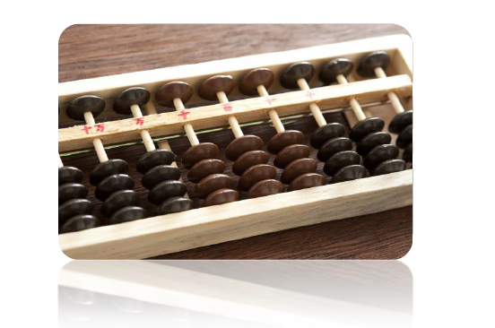

Lesson 4 - History Of Computer
- Home
- / Computer Fundamental
Computer is not a overnight invention, human uses computer since a acient peroid of time. Acient people use stone for calculation or a manual technique to compute calculation. Later on, many attempts had been going on for developing faster computing device and then, Abacus is invented which was used to do calculation faster.
Let's us take a look at the developement of computer through various stage.

Abacus is invented around 3000 years ago, before the birth of Jesus Criest. Mesopotamians discovered the earliest form of bead-and-wire counting system, which subsequentlycame to be known as Abacus.
An Abacus is consist of beads divided into two parts which are movable on the rods of the two parts.
Addition and Multiplication etc. of numbers is done by using the place value of the digit of the numbers and position of the beads in Abacus.
Later on, after many development in Abacus we get a "Nopier's Logs" and "Bones", then a "Pascal Adding Machine", after that we get a computer in shape of Leibnitz's Calculator and after many several developement we get a shape of computer which you see today.
Hey ! Albert here,
We are going here to describe you History about Modern Computer, If you still continue with your learning you are doing great dear!! Keep it up.
The terms "Computer Generation" is often used to descibe the relation to the hardware and computer. Each phase of computer developement is knows as a seperate generation of Computer. Each phase of development is characterised by type of circuit its utilizes.
Most computer now a days, use the idea of 'stored program computer' that was proposed by Dr. John Von Neumann in 1945.
The Von architecture is based upon the following three concept -
The First generation Computer are used thermionic valves (vaccum tubes) and machine language was used for giving instruction. The first generation computer used the concept of "store program".
The computer of this generation were very large in size and their programming is very difficult task.
Some Computer of this generation are given below.
A Big revolution in Electonic took place while the development of Second generation Computer is going on makes its more effiecient to use.
The Second Generation Computer begans with the advent of transistorized circuitry, invention of magnetic core and developement of magnetic disk storage device. These new developments made these computer much more functionable and reliable.
The increased realiablity and availablity of larger memory leads the development of some higher level language (HLL) such as -
FORTON, COBOL, Algol and Snobol etc.
Operating system came into being with the high speed CPUs and magnetic disk storage.
Commercial application rapidly developed during this phase with the wide varity of uses in Business and Industries cover 80% of market.
List of Some Second Generation Computer -
Hii, Aghori here dear, Please note down some Important notes I'm going to tell you. Open your notepad and start writing some key features of Second Generation Computer.
The Third generation Computer using Integrated Circut (IC or chips) make them more reliable, faster and relatively inexpensive. Now due to more innovation in Third's Generation less human labour is required at assembly stage.
The size of a main memory is also reached upto 4 megabytes. magnetic disk technology is also improved and it makes drive having capacity to contain upto 100 MBs. The CPUs become more powerfull with the capacity of carrying out 1 Millions instruction per second (MIPS).
List of Some Third Generation Computer -
List of some Mini Computer Developed during this phase.
Listen dear,
Please note down some key features of Third Generation Computer.
The advent of microprocessor chip lead the beigning of Fourth Feneration Computer. Medium Scale Integrated (MSI) yeild to Very Large Scale Integrated (VLSI) circuits packing about 50000 transistor in a chip.
Semiconductor memories comes in existence and replace the magnetic core memories. Microprocessor also advent at this time and leads a extremly powerful personal computer. Computer cost comes down so rapidly that its found even in home and most of the offices.
In 1995 the most popular CPUs were Pentium, Power PC etc.
The Hard disk are now also available with 80 GB available space. The CD-ROMs (Compact Disk- Read Only Memory) also becoming popular
day by day which have a capacity of store data upto 650 MBs.
Before learing Functioning of Computer first read carefully this example.
If you want to make a Tea. Then what would you do ?
First you take a frypan, then pour a glass of water into it.
Then sdded a sugar , milk and a Tea Leaves into it , then you boil it for 15 min and after 15 min, you switch off the gas , and finally your Tea is ready.
Now conclude what you do. to make a tea -
Now , after reading above example, I thought you got an idea that How Computer really works.
Its take Input by user. Processs the given data.
And finally gives you an Output. That's a method of Functioning of Computer.
Vinay Bhatt is the Founder of LearnInCreation, an education and technology platform focused on making computer science and digital learning simple, practical, and accessible. He holds a B.Sc. degree from Kumaun University and has professional certifications in Full Stack Web Development, Digital Marketing, and Ethical Hacking. Passionate about education and technology, he creates beginner-friendly courses, practical learning resources, and projects that help students develop real-world skills and prepare for their careers.
LearnInCreation helps students learn computer science and technology through easy-to-understand courses, practical projects, books, e-books like learning resources, enabling them to build skills for academic success and future careers.
Watch old videos of computer lessons, Subscribe us on Youtube